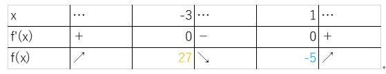

【１．増減表とは】
増減表とは、名前の通り「関数が増えたり減ったりを示した表」のことだよ。
じゃあ関数が増えたり減ったりってどうやってわかるんだったけ？？
…そう！第１回で学んだ微分ってその関数の傾きを示しているんだったね！
ということは、その関数を微分したときの値に注目すれば関数が増えたり減ったりしている様子がわかる。
そして、その結果をまとめたものが「増減表」なんだ！
では、次にその増減表を作るのあたって、大事になってくる「極大値・極小値」について説明するよ！
【２．極値とは】
じゃあ、極値について説明するよ！
極大値・極小値とは適当な領域における関数の値の最大元と最小元のことである。
簡単に言うと「極大値とは山の頂上。極小値とは谷の一番下」のことを言うんだ。
もう少し、数学っぽく言うと
傾きが＋⇒－になるとき：極大値
傾きが－⇒＋になるとき：極小値
だね！もう一つ、気を付けてほしいんだけど極大値と極小値のときの関数の傾きは０だよ。
実際に考えればわかると思うけど、山のまさに頂上って傾いてないし、谷の一番下も真っ直ぐだよね！
【３．増減表の書き方】
実際に増減表の書き方を説明していくよ！必要な値は
①関数の傾き(微分の値)が０のときのxの値
②その時のf(x)
の２つだよ。この値は与えられた関数を微分したりして求めるよ。
それでは例題をやってみよう
①x=-3とx=1の時に微分の値が0
②それぞれのf(-3)とf(1)の値が27と-5
の時の増減表を描いてみるよ
f’(x)の0以外のところは、その時の値が正なら＋、負ならーを書くよ
f(x)の極値以外のところは、f’(x)が＋なら↗、－なら↘を書くよ
単元選択へ戻る練習問題へ